Figuras Chartistas
Hola Trader, en la clase de hoy veremos las figuras chartistas. El chartismo es una de las divisiones del análisis técnico, también conocido como análisis gráfico. (El término Chart se deriva del inglés y significa gráfico).
Acá se analiza la información que nos va revelando los gráficos a partir de figuras geométricas. Este tipo de análisis se puede utilizar en gráfico de velas, gráfico de barras y gráfico de líneas.
Para motivos de la clase todo será explicado en ejemplos de gráfico de líneas sin una temporalidad específica, puesto que el mercado es fractal y tiende a repetirse en otras temporalidades bajo los mismos principios.
No es necesario que sepas chartismo para ser rentable, sin embargo, el chartismo bien usado te dará más oportunidades de tomar operaciones durante tu tiempo de análisis, así mismo te podría ayudar a tomar ciertas precauciones en algunos niveles.
En esta clase no se explicarán todas las figuras chartistas, tomaremos como ejemplos las más comunes. Si quieres profundizar más en cada una de las figuras chartistas al final encontrarás las clases respectivas con ejemplos en gráficos de velas.
Podemos separar las figuras chartistas en dos tipos, las figuras chartistas de cambios de tendencia y de continuidad.
Figuras de Reversión o cambio de tendencia.
Entre las figuras de cambios de tendencias podemos encontrar a las más comunes que serían doble suelo, doble techo, hombro cabeza hombro y su variante, hombro cabeza hombro invertido.
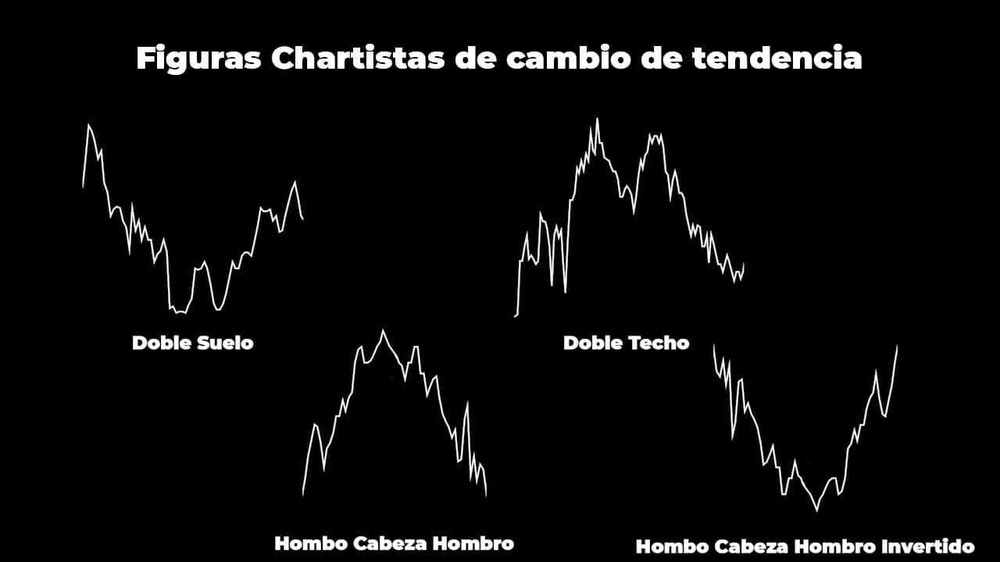
Al ser figuras de reversión deben darse al final de una tendencia, ya sea alcista o bajista dependiendo de la figura.
En el siguiente ejemplo observamos un doble techo dado al final de una tendencia alcista, lo que nos mostraría reversión.
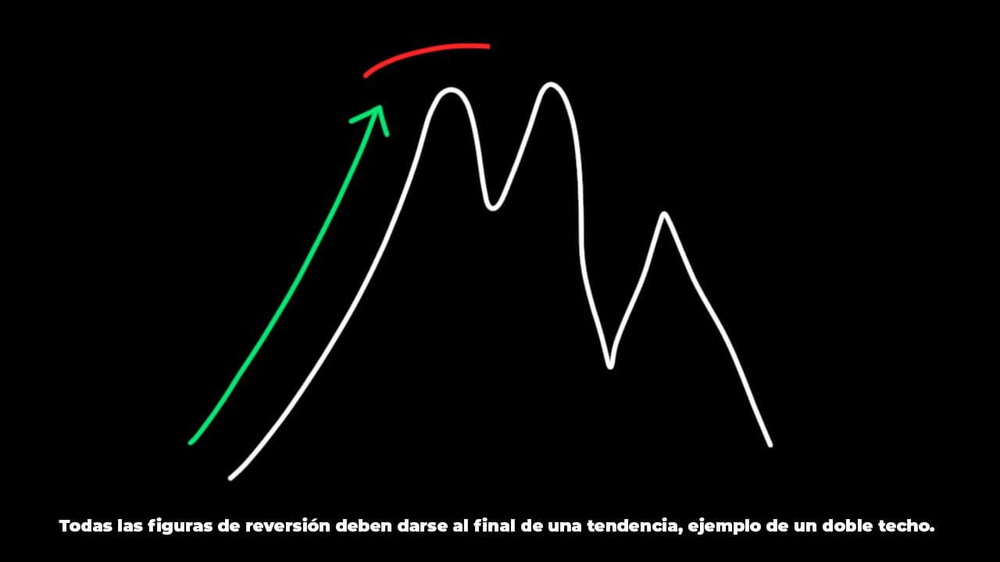
No puede darse por ejemplo un doble suelo (patrón de reversión al alza) al final de una tendencia alcista, puesto que no nos estaría mostrando reversión sino continuidad.
Doble Techo y Doble Suelo
Podemos identificarlos porque tienen dos máximos al mismo nivel. Aunque podemos encontrar variaciones con el segundo máximo un poco más alto o más bajo.
Estos máximos comparten un solo mínimo, este mínimo es el cuello, una zona de soporte que al ser rota confirma la formación de la figura.
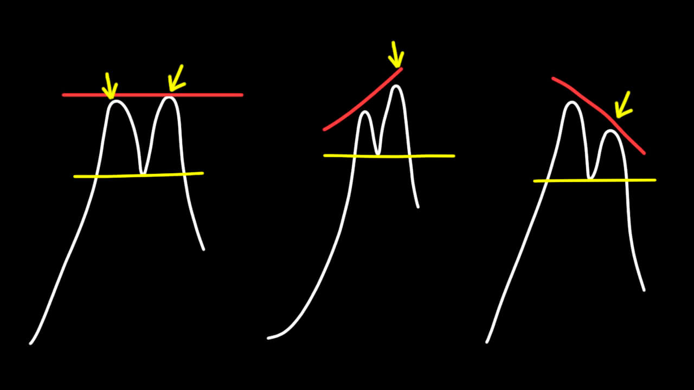
Los dobles suelos son lo inverso al doble techo, dos mínimos al mismo nivel que comparten un máximo, este máximo es el cuello, una zona de resistencia que al ser rota valida el doble suelo.
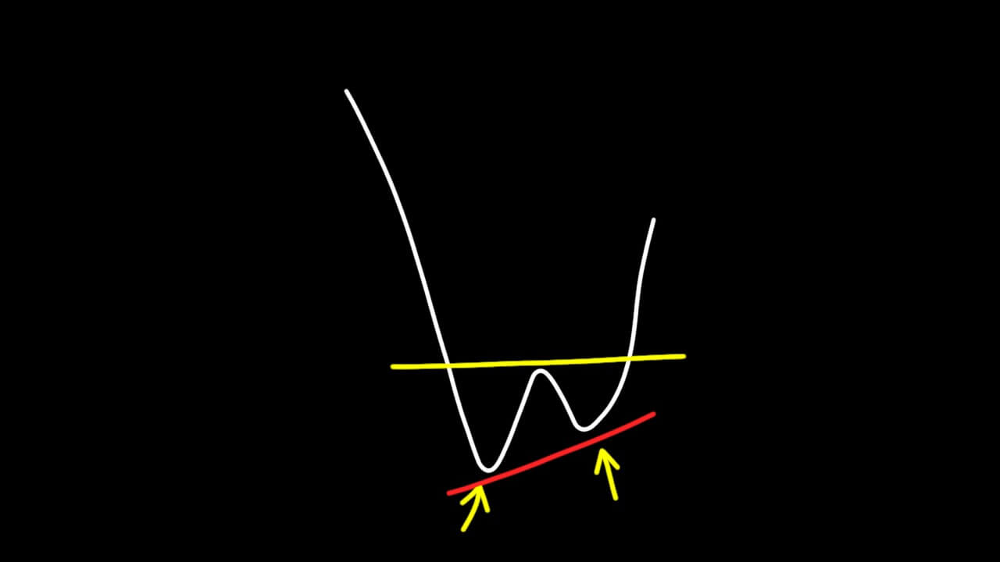
Patrones como triple techo, triple suelo, hombro cabeza hombro y HCH invertido utilizan la misma teoría. Tras el rompimiento del cuello se confirma la figura y el cambio de tendencia.
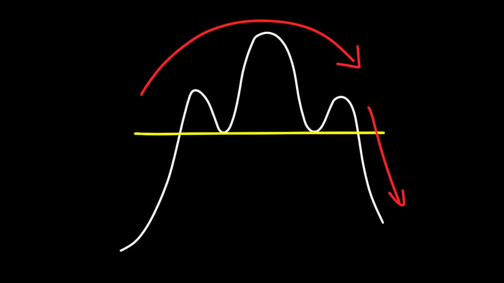
Tenemos que tener precaución, que se forme una figura no significa que el precio vaya a respetarla. Las figuras chartistas pueden tener un resultado incierto, para evitar esto debemos apoyarnos con toda la información que tenemos en la gráfica (contexto y acción del precio) para tomar una buena decisión.
Figuras de Continuidad
Entre las figuras de continuidad más comunes podemos encontrar los triángulos ascendentes, descendentes y banderas alcistas o bajistas.
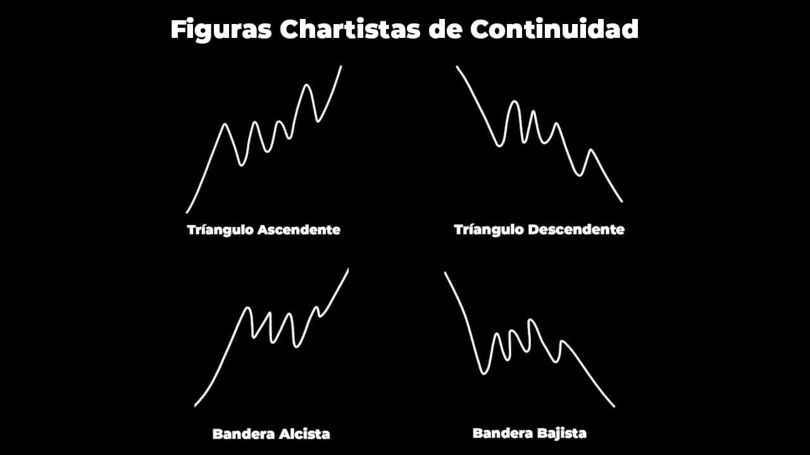
Estas figuras de continuidad no son solo más que descansos del precio, tras la ruptura de la figura el precio buscaría continuar con su camino.
Triángulo Ascendente y Descendente
El triangulo ascendente tiene una resistencia fuerte al cual el precio le cuesta pasar. Podemos observar que los mínimos están siendo cada vez más altos, esto nos muestra que el precio insiste romper.
Tras el rompimiento del nivel el precio continúa con la tendencia general.
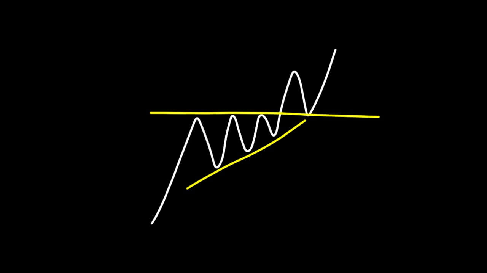
Lo mismo pero inverso pasa para un triángulo descendente. Identificamos un soporte fuerte, el precio va creando máximos cada vez más bajos, lo que nos enseña la insistencia en bajar y continuar con su camino.
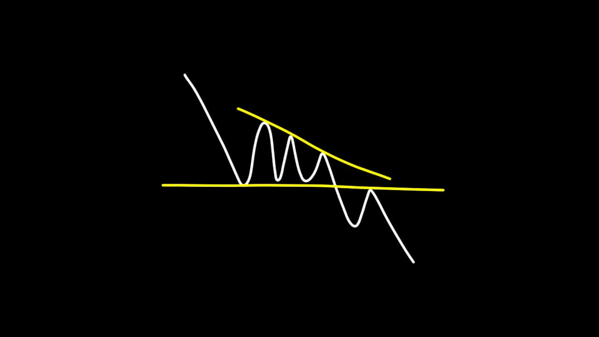
Banderas Alcistas y Bajistas
Las banderas alcistas las podemos identificar porque se forma una pequeña consolidación en sentido bajista, mientras que la tendencia general sigue siendo alcista. Esa consolidación forma un Soporte y Resistencia dinámicos. Acá podemos identificar el descanso del precio en un corto retroceso y luego tras la ruptura de la resistencia dinámica el precio buscará continuar con su movimiento alcista.
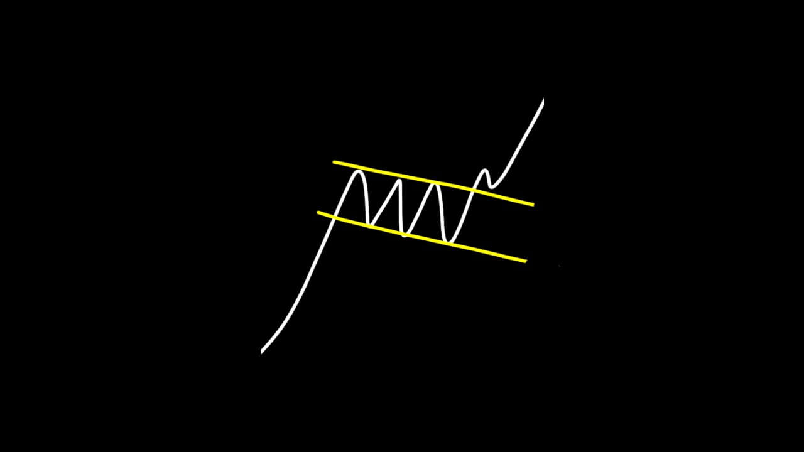
En las banderas bajistas podemos identificar una consolidación alcista, esta pequeña consolidación va en contra de la tendencia general bajista. En esta consolidación se forma soportes y resistencias dinámicos. Tras la ruptura del soporte el precio buscaría continuar con su movimiento general bajista.
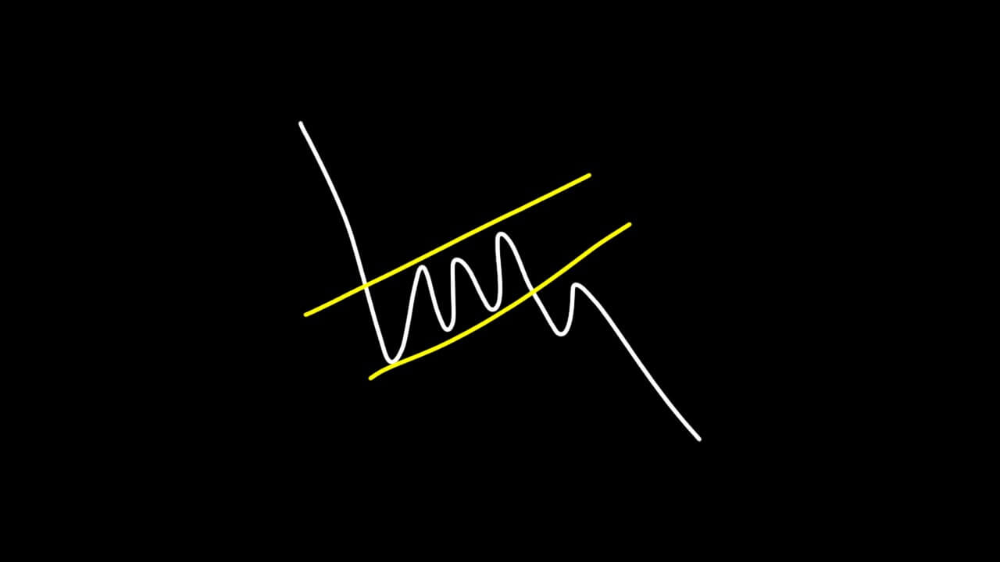
Ten cuidado con los patrones de continuidad, algunas veces los encontraremos en zonas muy consolidadas y la información que nos brinda bajo estas situaciones puede ser muy confusa.
Aplicando lo mismo de antes, que una figura de continuidad se forme no significa que el precio la vaya a respetar.
Canales Laterales, Alcistas y Bajistas.
A continuación, veremos una de las figuras chartistas más comunes, esta son los canales.
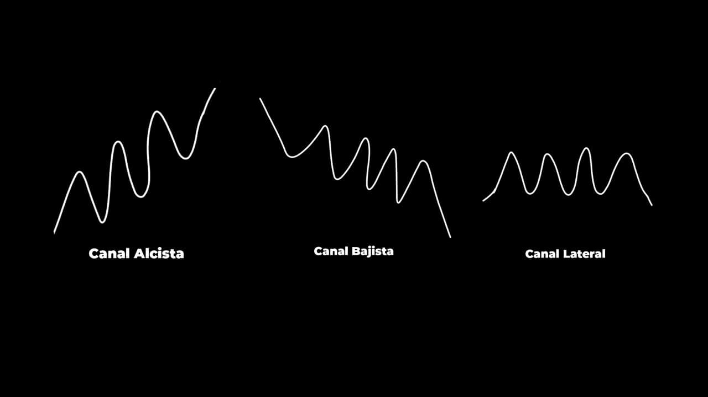
Los canales se identifican porque el precio queda atrapado entre una resistencia y un soporte fuerte. En este tipo de situaciones podemos aprovechar las oportunidades de operar cada vez que el precio rebote en las zonas.
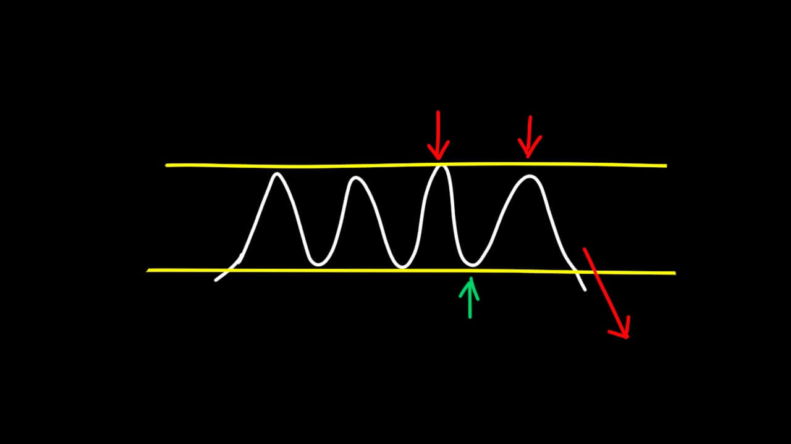
Ten cuidado con estas operativas ya que mientras más veces el precio rebote en una zona tiene más probabilidades de que termine rompiéndola.
Niveles Objetivo
La mayoría de figuras chartistas tienen un nivel objetivo, este nivel es una zona de soportes y resistencias que se puede calcular, el precio buscaría llegar a esta zona tras la ruptura de la figura. Una vez alcance la zona el precio debería buscar retroceder hacia la figura chartista para completar el pullback y luego continuar con su camino. En este pullback se puede aprovechar la oportunidad de operar el ultimo beso.
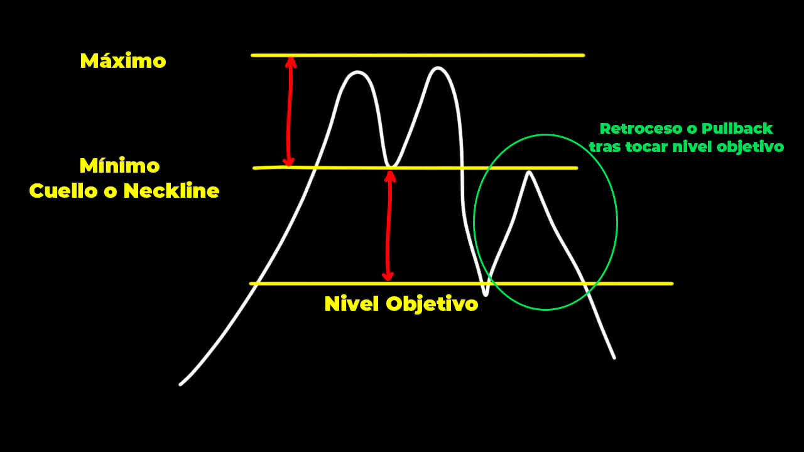
Para calcular el nivel objetivo necesitas identificar el punto máximo y mínimo que componen la figura chartistas antes del rompimiento. Cuando el precio rompe la figura se busca una distancia similar en dirección de la ruptura. Esa distancia es a la cual el precio podría llegar y luego retroceder para hacer el pullback.
Este nivel objetivo que no es nada más que una zona de soporte o resistencia dependiendo del caso.
Recuerda, que estas zonas existan no quiere decir que el precio las vaya a respetar, simplemente son zonas donde existe probabilidad de que el precio interactúe, nuestro trabajo es completar un buen análisis para identificar posibles oportunidades.
Más adelante veremos como usar todo lo aprendido. Pero antes debemos continuar con algunos temas.
En la próxima clase estaré compartiendo una biblioteca con figuras chartistas, como les digo, son demasiadas, pero no hace falta que te aprendas todas. Con las mas comunes se le puede sacar provecho.
A continuación, encontrarás los enlaces a los vídeos donde se profundiza en cada una de las figuras más comunes.
- Canales de Tendencias
- Triángulos Simétricos
- Triángulos Ascendentes y Descendentes
- Banderas Alcista y Bajista
- Banderín Alcista y Bajista
- Cuñas
- Rectángulo Ascendente y Descendente
- Doble Techo y Doble Suelo
- Hombro-Cabeza-Hombro y H-C-H Invertido
Actividad #4
Para esta actividad debes elegir 2 figuras chartistas, las que consideres que se te hace más sencillo de recordar e identificar.
Luego búscalas en el pasado de tu gráfico, identifícalas y súbelas al grupo del salón virtual para que podamos corregirlas con el equipo.
En un principio te puede resultar muy difícil y aburrido identificarlas, pero con la práctica te darás cuenta que son más comunes de lo que pensamos.
Utiliza #Actividad4, y súbelo bajo la etiqueta “chartismo”. A continuación, un ejemplo.
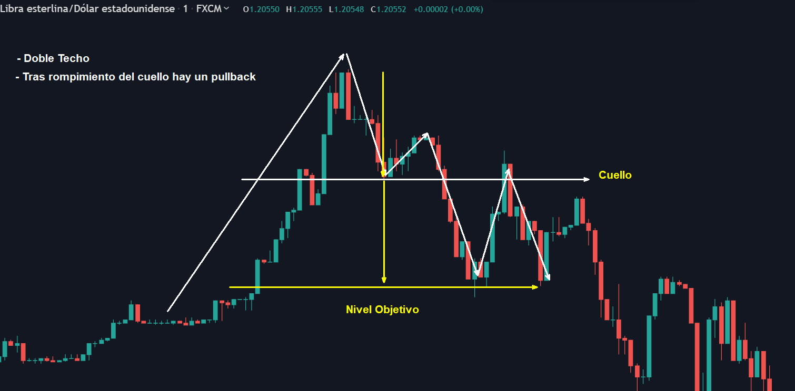
¡Gracias por participar en la clase! Cualquier duda puedes dejarla en los comentarios o en el hilo respectivo en el salón para que puedan ser resueltas en la próxima clase de preguntas y respuestas.